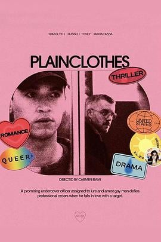

7.7
便衣警察
Plainclothes
2025
英国
评分 7.7
导演:
卡门·艾米 (Carmen Emmi)
演员:
汤姆·布莱斯 (Tom Blyth) / 拉塞尔·托维 (Russell Tovey) / 玛丽亚·迪齐亚 (Maria Dizzia) / 克里斯蒂安·库克 (Christian Cooke) / 加布·法齐奥 (Gabe Fazio) / 艾米·福赛思 (Amy Forsyth) / 约翰·贝德福德·劳埃德 (John Bedford Lloyd)
类型:
剧情,惊悚,爱情
剧情简介
90年代的纽约州，一名看似勤恳的卧底警察卢卡斯（汤姆·布莱斯 饰）被派遣进入一个“便衣诱捕”小组，他的任务是在商场、公共厕所中引诱男同性恋者，并协助执法人员抓捕他们。卢卡斯白天穿着制服，晚上披上便衣，他在昏暗的商场灯光下等待信号，用沉默的目光測探、诱导、等待。在一次行动中，他接触到了安德鲁（拉塞尔·托维 饰）——一个看似普通却警觉的男子。卢卡斯发现自己在完成任务的同时，对安德鲁生出了无法抑制的情感。那种情感像冬夜的霜，冷得悄无声息，却渐渐侵蚀了他原本坚守的信念。安德鲁在光影交错的楼梯间转身一笑，卢卡斯在监控录像的背后看见自己的心跳。剧情在压抑与释放之间游走：当卢卡斯在家庭新年派对中意外遗失一封亲笔信，他突然认识到，自己不仅是执行任务的一员，也成为了被监视者之一。他在镜头里、在镜子前、在夜晚的电话铃声中，重新审视自己的身份、欲望与责任的边界。影片用监控录像的颗粒感、延时镜头的窒息感，营造出一种“被看与看他人”的双重焦虑。这不仅是一段“卧底警察 vs 目标”的危机戏，更是一场“自我 vs 社会期望”的内心战争。当任务命令一再敲响，他不得不选择：是忠于制度，还是追随内心。导演以冷色调捕捉商场走廊、镜片反光、警徽闪烁的瞬间，让观众仿佛站在动作之外，窥视一个人的崩塌。如果你对90年代社会禁忌、心理潜伏和被压抑的爱感兴趣，那么这部《便衣警察》将用低调却强烈的节奏让你体验那种“身份隐藏、真实暴露”的刺痛瞬间。